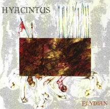

| Artist: | Hyacintus |
| Title: | Elydian |
| Label: | Viajero Inmovil Records |
| Length(s): | 54 minutes |
| Year(s) of release: | 2002 |
| Month of review: | [08/2002] |
| 1) | Acto I - Elydian | 4.17 |
| 2) | Acto II - El Costo Del Tributo | 5.06 |
| 3) | Acto III - Creciendo Con Su Secreto | 3.32 |
| 4) | Acto IV - Overlay | 5.51 |
| 5) | Acto V - Destruccion Y Desolacion | 3.18 |
| 6) | Acto VI - Dolor En El Alma | 5.37 |
| 7) | Acto VII - Marcha Hacia Elydian | 3.56 |
| 8) | Acto VIII - Recorriendo Las Calles | 4.13 |
| 9) | Acto IX - Dubiel | 3.33 |
| 10) | Acto X - Adiestrmiento Y Preparativos | 4.12 |
| 11) | Acto XI - Preludio | 2.41 |
| 12) | Acto XII - La Batalla | 4.48 |
| 13) | Acto XIII - Final | 3.20 |